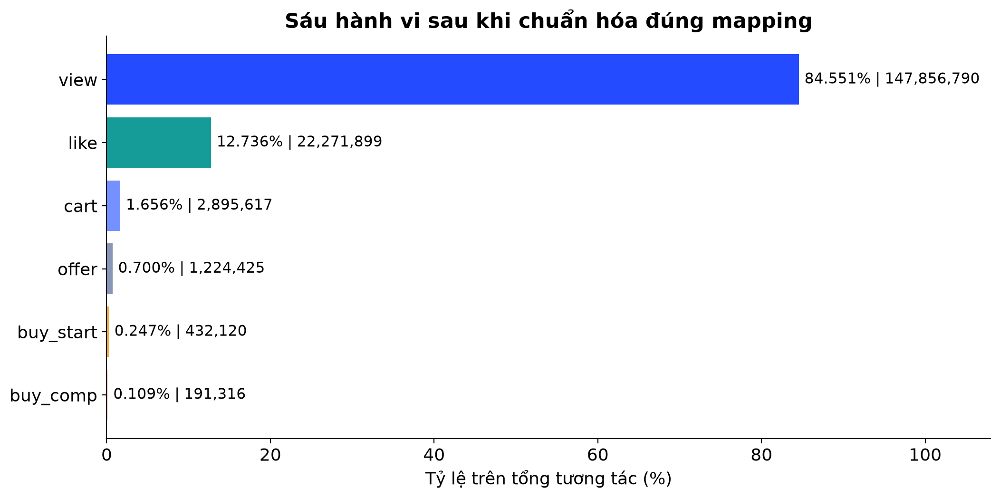

01/40 · Mở đầu
MerRec — Gợi ý sản phẩm từ dữ liệu hành vi
- Phân tích dữ liệu tháng 05/2023, xây dựng đặc trưng và thực nghiệm mô hình gợi ý.
- Trọng tâm: dữ liệu lớn, implicit feedback, cold-start và đánh giá Top-K.
- Chèn tên nhóm, thành viên và giảng viên khi thiết kế.
Bìa 16:9; tiêu đề trái, sơ đồ Dữ liệu → Mô hình → Gợi ý bên phải.
Nguồn trong repository
training/00_eda.ipynb; training/01_preprocess.ipynb
02/40 · Mở đầu
Nội dung trình bày
- 01 Introduction · 02 Problem Definition · 03 Dataset Description.
- 04 Data Preprocessing · 05 EDA · 06 Feature Engineering.
- 07 Models · 08 Model Training · 09 Results · 11 Conclusion.
- 10 Web Application / Demo tách riêng ở phụ lục 39–40.
Mục lục hai cột, số thứ tự trong hình tròn xanh; demo đặt trong ô nhỏ cuối trang.
Nguồn trong repository
03/40 · 01 Introduction
Bối cảnh và thực trạng thương mại điện tử
- Theo Bộ Công Thương, quy mô TMĐT Việt Nam năm 2024 vượt 25 tỷ USD, tăng 20% so với năm 2023.
- Catalog đa dạng đặt ra bài toán giúp người mua khám phá sản phẩm phù hợp.
- Trong bài toán C2C, dữ liệu hành vi và thuộc tính item là nguồn tín hiệu cho gợi ý.
- Đề tài dùng MerRec từ Mercari để thực nghiệm; không dùng dữ liệu thị trường Việt Nam để huấn luyện.
Hai thẻ >25 tỷ USD và +20%, ghi rõ năm 2024; bên dưới là liên hệ tới bài toán khám phá sản phẩm.
Nguồn trong repository
https://moit.gov.vn/khoa-hoc-va-cong-nghe/thuong-mai-dien-tu-viet-nam-nam-2024-nhung-buoc-tien-va-thach-thuc.html; https://arxiv.org/abs/2402.14230
04/40 · 01 Introduction
Vấn đề thực tiễn: tìm sản phẩm nào giữa catalog lớn?
- Người mua cần thu hẹp lựa chọn và tìm item phù hợp với mối quan tâm.
- Tìm kiếm theo từ khóa cần người dùng diễn đạt được nhu cầu; danh sách phổ biến không tự phản ánh sở thích riêng.
- Dữ liệu dự án có 30,05 triệu item nhưng 71,17% item có dưới 5 tương tác.
- 84,55% sự kiện là view: cần khai thác cả lịch sử hành vi thay vì chỉ chờ tín hiệu mua.
Hai cột: khó khăn khi khám phá sản phẩm và bằng chứng trong MerRec; kết luận nhu cầu gợi ý dựa trên dữ liệu.
Nguồn trong repository
data/processed/eda_merrec_may/kernel_1752/tables/02_overview.csv; data/processed/eda_merrec_may/kernel_1752/tables/06_cold_items.csv; data/processed/recommender/tables/01_event_mapping.csv
05/40 · 01 Introduction
Lý do chọn đề tài
- Tính thực tiễn: hỗ trợ khám phá sản phẩm dựa trên nhu cầu và lịch sử người dùng.
- Tính học thuật: nghiên cứu implicit feedback, long-tail, cold-start và dữ liệu tuần tự trong C2C.
- Tính khả thi: MerRec có timestamp, nhiều hành vi và metadata để xây dựng thực nghiệm.
- Tính ứng dụng: kết nối quy trình dữ liệu, mô hình gợi ý và giao diện minh họa.
Bốn thẻ lý do: Thực tiễn · Học thuật · Dữ liệu phù hợp · Khả năng ứng dụng.
Nguồn trong repository
https://arxiv.org/abs/2402.14230; training/00_eda.ipynb; training/01_preprocess.ipynb
06/40 · 01 Introduction
Mục tiêu, ý nghĩa và phạm vi nghiên cứu
- Mục tiêu tổng quát: xây dựng và đánh giá phương pháp gợi ý Top-K trên dữ liệu hành vi MerRec.
- Mục tiêu cụ thể: xử lý dữ liệu, EDA, tạo đặc trưng và thực nghiệm nhiều hướng mô hình.
- Ý nghĩa: hiểu tác động của dữ liệu thưa, cold-start và giao thức đánh giá tới chất lượng gợi ý.
- Phạm vi: lát dữ liệu tháng 05/2023, đánh giá offline; demo web tách riêng.
Mục tiêu tổng quát ở dải đầu; ba khối Công việc · Ý nghĩa · Phạm vi bên dưới.
Nguồn trong repository
training/00_eda.ipynb; training/01_preprocess.ipynb; training/models
07/40 · 02 Problem Definition
Bài toán gợi ý và các thách thức
- Đầu vào: lịch sử user, loại hành vi và metadata; đầu ra: danh sách Top-K item.
- Hai hướng nghiên cứu: truy hồi theo sở thích/nội dung và dự đoán item tiếp theo.
- Độ thưa user–item khoảng 99,999843%; 32,75% dòng TEST chứa cold item.
- Đánh giá Recall, HitRate, NDCG; chú ý coverage, tập user và candidate universe.
Sơ đồ Đầu vào → Mô hình → Top-K ở trên; hai số liệu thách thức và nhóm metric ở dưới.
Nguồn trong repository
training/models/04_gru4rec.ipynb; training/models/05_two_tower.ipynb; data/processed/eda_merrec_may/kernel_1752/tables/12_matrix_sparsity.csv; data/processed/recommender/tables/03_cold_start_summary.csv
08/40 · 03 Dataset Description
MerRec: quy mô và cấu trúc dữ liệu
- 312 file Parquet, khoảng 21,57 GB; 174.872.167 tương tác trong lát dữ liệu tháng 05/2023.
- 2.765.863 user; 30.054.040 item_id; 913.718 product_id duy nhất.
- Các nhóm trường: định danh; event/timestamp/session; tên, giá, category và thuộc tính item.
- Nguồn là nền tảng C2C Mercari; session EDA dùng cặp (user_id, session_id).
Ba thẻ số liệu phía trên; bảng ba nhóm trường ở dưới; nguồn và phạm vi ở chân trang.
Nguồn trong repository
https://arxiv.org/abs/2402.14230; data/processed/eda_merrec_may/kernel_1752/tables/01_structure_summary.csv; data/processed/eda_merrec_may/kernel_1752/tables/02_overview.csv; data/processed/eda_merrec_may/kernel_1752/tables/01_union_schema.csv
09/40 · 03 Dataset Description
Sáu loại hành vi
- item_view → view; item_like → like.
- item_add_to_cart_tap → cart; offer_make → offer.
- buy_start → bắt đầu mua; buy_comp → hoàn tất mua.
- Đây là implicit feedback, không phải điểm rating.
Bảng tên gốc → tên chuẩn → ý nghĩa; không vẽ thành funnel bắt buộc.
Nguồn trong repository
data/processed/recommender/tables/01_event_mapping.csv
10/40 · 04 Data Preprocessing
Pipeline tiền xử lý
- Parquet → DuckDB raw view → chuẩn hóa ID, timestamp, event và metadata.
- Lọc bản ghi không hợp lệ → khử trùng → chia theo thời gian.
- Xuất interactions, train-only ID maps, catalog và implicit-feedback pairs.
- Tạo popularity/trending và các cohort cold-start.
Sơ đồ ngang 6 bước; mỗi bước tối đa một dòng.
Nguồn trong repository
training/01_preprocess.ipynb
11/40 · 04 Data Preprocessing
Làm sạch và khử trùng
- Chuẩn hóa ID thành chuỗi; trim; đọc timestamp theo kiểu dữ liệu nguồn.
- Lọc thiếu user_id/item_id/timestamp và event không hỗ trợ.
- Khóa khử trùng: user, item, event, timestamp, session và sequence.
- 174.872.167 → 174.725.659 dòng; tổng giảm 146.508 dòng.
Hai số lớn trước/sau và hộp chứa khóa khử trùng.
Nguồn trong repository
training/01_preprocess.ipynb; data/processed/recommender/tables/02_split_summary.csv
12/40 · 04 Data Preprocessing
Xử lý metadata thiếu
- Color thiếu 95,61%; size_name 62,74%; brand_name 19,20%.
- Danh mục thiếu lấy cấp cha; brand/condition/shipper dùng __UNK__.
- Size giữ NULL lúc chuẩn hóa; color không xuất vào interactions train/val/test.
- Giữ lại hành vi hữu ích khi chỉ thiếu metadata tùy chọn.
Ảnh 60% bên phải, quy tắc xử lý bên trái.
Nguồn trong repository
data/processed/eda_merrec_may/kernel_1752/tables/03_missing.csv; training/01_preprocess.ipynb
13/40 · 04 Data Preprocessing
Chia TRAIN / VAL / TEST theo thời gian
- TRAIN 01–25/05: 145.998.253 tương tác.
- VAL 26–28/05: 16.885.121 tương tác.
- TEST 29–31/05: 11.842.285 tương tác; kết thúc 31/05 lúc 00:00:00.
- Integrity đã lưu: TRAIN trước VAL, VAL trước TEST.
Timeline/số lượng ngang lớn với nhãn ngày.
Nguồn trong repository
data/processed/recommender/tables/02_split_summary.csv; data/processed/recommender/tables/09_split_integrity.csv
14/40 · 04 Data Preprocessing
ID mapping và cold-start
- Mapping từ TRAIN: 2.581.378 user; 27.328.461 item.
- TEST cold-user 6,35%; cold-item 32,75%; cả hai cold 1,64% số dòng.
- Tách cohort warm, cold-user, cold-item và cold-both.
- Cần phương án fallback cho trường hợp thiếu lịch sử.
Biểu đồ nhóm cột và câu kết luận dưới ảnh.
Nguồn trong repository
data/processed/recommender/tables/03_cold_start_summary.csv; data/processed/recommender/tables/04_cf_train_summary.csv
15/40 · 05 Exploratory Data Analysis
EDA: mất cân bằng hành vi
- View 84,551%; like 12,736%; cart 1,656%.
- Offer 0,700%; buy_start 0,247%; buy_comp 0,109%.
- Tín hiệu mua hoàn tất rất hiếm so với lượt xem.
- Cần khai thác nhiều hành vi và báo cáo target mua hàng riêng.
Biểu đồ ngang chiếm 70%; ba ý diễn giải ngắn.

s15_event_mapping_corrected.png · nhấn ảnh để tảiNguồn trong repository
data/processed/recommender/tables/01_event_mapping.csv
16/40 · 05 Exploratory Data Analysis
EDA: người dùng có phân bố dài đuôi
- Trung bình 63,23 tương tác/user nhưng trung vị chỉ 12.
- P95=275; P99=791; cực đại=29.597.
- 13,31% user có đúng một tương tác; 31,36% có dưới 5.
- Cần xử lý cả ít lịch sử và hoạt động rất mạnh.
Histogram log bên phải; hai thẻ mean/median bên trái.
Nguồn trong repository
data/processed/eda_merrec_may/kernel_1752/tables/05_user_summary.csv; data/processed/eda_merrec_may/kernel_1752/tables/05_user_thresholds.csv
17/40 · 05 Exploratory Data Analysis
EDA: long-tail của sản phẩm
- Trung vị 2 tương tác/item; trung bình 5,82.
- 38,80% item có dưới 2 tương tác; 71,17% có dưới 5.
- 85,59% item có dưới 10 tương tác.
- Cần quan tâm tới item ít dữ liệu, không chỉ item phổ biến.
Hai ảnh cạnh nhau: histogram log và Pareto.
Nguồn trong repository
data/processed/eda_merrec_may/kernel_1752/tables/06_item_summary.csv; data/processed/eda_merrec_may/kernel_1752/tables/06_cold_items.csv
18/40 · 05 Exploratory Data Analysis
EDA: các phiên tương tác thường ngắn
- 34.832.704 session theo cặp (user_id, session_id).
- Trung vị 2 tương tác; P95=18; P99=39.
- Trung vị thời lượng 37 giây; P95=890 giây.
- Hành vi gần nhất là nguồn ngữ cảnh đáng thử nghiệm.
Hai ảnh session length/duration.
Nguồn trong repository
data/processed/eda_merrec_may/kernel_1752/tables/07_session_summary.csv
19/40 · 05 Exploratory Data Analysis
EDA: thời gian và biên dữ liệu
- 01–30/05 có khoảng 5,54–6,29 triệu tương tác/ngày.
- 31/05 chỉ có 88 sự kiện: không phải ngày quan sát đầy đủ.
- Mọi phân tích giờ dùng UTC.
- Cần đọc đúng biên dữ liệu trước khi diễn giải xu hướng.
Daily chart lớn; heatmap là hình bổ sung hoặc thay thế.
Nguồn trong repository
data/processed/eda_merrec_may/kernel_1752/tables/09_daily.csv
20/40 · 05 Exploratory Data Analysis
EDA: mức độ quan tâm theo danh mục
- Women: 59.154.207 tương tác, khoảng 33,83% toàn bộ.
- Toys & Collectibles: 32.901.840; Men: 15.672.537.
- Category1 nổi bật gồm Shoes và Women’s handbags.
- Category phân cấp là nguồn đặc trưng cho nội dung và retrieval.
Ảnh category0 chính; category1 là ảnh tùy chọn.
Nguồn trong repository
data/processed/eda_merrec_may/kernel_1752/tables/10_top_category0.csv; data/processed/eda_merrec_may/kernel_1752/tables/10_top_category1.csv
21/40 · 05 Exploratory Data Analysis
EDA: phân bố giá lệch phải
- Giá trung bình 62,69; trung vị 25; P95=225; P99=636.
- Khoảng giá quan sát 1–5.000, theo đơn vị gốc của dataset.
- 11,51% dòng ngoài ngưỡng IQR; không đồng nghĩa đều là lỗi.
- Two-Tower dùng log(1+price), sau đó chuẩn hóa mean/std.
Histogram log lớn; mean và median trong hai thẻ nhỏ.
Nguồn trong repository
data/processed/eda_merrec_may/kernel_1752/tables/11_price_stats.csv; data/processed/eda_merrec_may/kernel_1752/tables/11_price_outliers.csv; training/models/05_two_tower.ipynb
22/40 · 05 Exploratory Data Analysis
Từ EDA đến quyết định mô hình hóa
- 130.233.126 cặp user–item duy nhất; độ thưa 99,999843%.
- 25,53% phần tương tác là lặp thêm trên các cặp đã có.
- Dữ liệu thưa → thử implicit CF, metadata và chuỗi hành vi.
- One-pass 5-core loại 22,33% tương tác trong chẩn đoán.
Bảng Phát hiện → Quyết định; ảnh k-core nhỏ hoặc dự phòng.
Nguồn trong repository
data/processed/eda_merrec_may/kernel_1752/tables/12_matrix_sparsity.csv; data/processed/eda_merrec_may/kernel_1752/tables/12_repeated_interactions.csv; data/processed/eda_merrec_may/kernel_1752/tables/12_k_core_one_pass.csv
23/40 · 06 Feature Engineering
Implicit feedback có trọng số
- view=1; like=2; cart=4; offer=5; buy_start=7; buy_comp=10.
- implicit_score(u,i) = tổng trọng số sự kiện của cặp user–item.
- Lưu thêm số hành vi từng loại và thời điểm tương tác cuối.
- TRAIN tổng hợp thành 109.718.519 cặp user–item.
Biểu đồ trọng số bên phải, công thức một dòng bên trái.
Nguồn trong repository
training/01_preprocess.ipynb; data/processed/recommender/tables/04_cf_train_summary.csv
24/40 · 06 Feature Engineering
Biểu diễn nội dung và metadata
- Content-Based: Hashing TF-IDF 262.144 chiều, unigram và bigram.
- Văn bản: name, category0/1/2, brand, condition.
- Two-Tower: hash 7 trường metadata thành embedding, ghép price_z.
- Hashing và batch processing giúp kiểm soát bộ nhớ.
Hai nhánh: văn bản → TF-IDF; metadata + giá → embedding/MLP.
Nguồn trong repository
training/models/01_content_based.ipynb; training/models/05_two_tower.ipynb
25/40 · 06 Feature Engineering
Chuỗi item và hành vi cho GRU4Rec
- Lịch sử được sắp theo thời gian; mỗi bước có item và loại hành vi.
- Item embedding 32 chiều; event embedding 16 chiều.
- Độ dài cấu hình tối đa 100; PAD=0, OOV=1.
- Nhãn là item tiếp theo; hành vi là feature đầu vào.
Sơ đồ minh họa i₁/view → i₂/like → i₃/cart → dự đoán i₄.
Nguồn trong repository
training/models/04_gru4rec.ipynb; artifacts/merrec_models/GRU4Rec/serving/gru4rec_config.json
26/40 · 07 Models
Các nhóm mô hình và phạm vi thực nghiệm
- Baseline/fallback: Popularity, Trending; đã có snapshot.
- Theo nội dung/đồng xuất hiện: Content-Based, Co-visitation.
- Học biểu diễn: ALS, GRU4Rec, Two-Tower.
- Chưa có kết quả để báo cáo: SASRec, DCN, LightGBM Ranker.
Sơ đồ ba nhóm phương pháp; nhóm chưa hoàn tất để ô riêng.
Nguồn trong repository
training/models; artifacts/merrec_models
27/40 · 07 Models
Popularity và Trending
- Popularity tổng hợp mức tương tác có trọng số theo item.
- Trending giảm ảnh hưởng sự kiện cũ với half-life 3 ngày.
- Điểm trending = Σ weight × 0,5^(tuổi sự kiện/3 ngày).
- Snapshot TRAIN dùng offline; snapshot processed toàn bộ phục vụ catalog/demo.
Công thức lớn, sơ đồ giảm ảnh hưởng theo tuổi sự kiện.
Nguồn trong repository
training/01_preprocess.ipynb; training/models/00_popularity_trending.ipynb
28/40 · 07 Models
Content-Based: gợi ý từ hồ sơ nội dung
- Sản phẩm được biểu diễn bằng Hashing TF-IDF và các thành phần điểm trong notebook.
- Hồ sơ user dùng tối đa 100 item lịch sử, recency decay 0,97.
- So khớp vector chuẩn hóa; tìm qua các shard; lọc item đã xem.
- VAL dùng lịch sử TRAIN; TEST dùng lịch sử TRAIN+VAL.
Metadata → vector item → hồ sơ user → cosine → Top-K.
Nguồn trong repository
training/models/01_content_based.ipynb
29/40 · 07 Models
Co-visitation: quan hệ đồng xuất hiện
- Chia session bucket → tạo cặp sliding window → reduce Top-K.
- Best VAL: history_items=30, decay=0,9.
- reverse_weight=0,4; popularity_penalty=0,1; window=5; model_topk=250.
- Refit TRAIN+VAL sau tuning, rồi đánh giá TEST.
Chuỗi item → cạnh đồng xuất hiện → danh sách láng giềng.
Nguồn trong repository
training/models/02_covisitation.ipynb; training/checkpoints/covisitation/polars_v2/tuning/best_config.json
30/40 · 07 Models
ALS: collaborative filtering cho implicit data
- Học vector ẩn user và item từ ma trận tương tác thưa.
- Artifact: factors=32, regularization=0,15, alpha=40, iterations=12.
- Chọn cấu hình bằng POSITIVE NDCG@20 trên VAL.
- Polars/PyArrow và CSR trên đĩa giúp kiểm soát bộ nhớ.
Sơ đồ ma trận ≈ user factors × item factors và bảng tham số nhỏ.
Nguồn trong repository
training/models/03_als.ipynb; artifacts/merrec_models/ALS/serving/als_config.json
31/40 · 07 Models
GRU4Rec: học thứ tự và loại hành vi
- Ghép item/event embedding → GRU 2 lớp, hidden_dim=128.
- Dự đoán item tiếp theo với sampled softmax; cấu hình train 64 negatives.
- Item embedding đặt CPU; GRU/dense được thiết kế chạy GPU.
- Metric đang có là sampled validation, không phải full-catalog TEST.
Sơ đồ item + event → GRU → ngữ cảnh → chấm điểm.
Nguồn trong repository
training/models/04_gru4rec.ipynb; artifacts/merrec_models/GRU4Rec/metrics/train_history.json
32/40 · 07 Models
Two-Tower: biểu diễn user và item
- User tower: user embedding 64 chiều.
- Item tower: 7 metadata embedding ×16 chiều + price_z → MLP 256 → 64.
- Chuẩn hóa vector; in-batch negatives và symmetric InfoNCE.
- Summary ghi FAISS index chứa 27.328.461 TRAIN item.
Sơ đồ hai tháp hội tụ tại tích vô hướng; FAISS sau item tower.
Nguồn trong repository
training/models/05_two_tower.ipynb; artifacts/merrec_models/TwoTower/serving/twotower_config.json; artifacts/merrec_models/TwoTower/metrics/summary.json
33/40 · 08 Model Training
Thiết lập huấn luyện
- ALS: 32 factors, 12 iterations; chọn theo POSITIVE NDCG@20.
- GRU4Rec: batch=128, tối đa 1 triệu windows/epoch; history có 8 epoch.
- Two-Tower: batch=2.048; history có 15 epoch; best ở epoch 15.
- Đọc theo batch/row-group, lưu checkpoint và hỗ trợ resume.
Bảng ba mô hình: batch/quy mô, số vòng, tiêu chí lựa chọn.
Nguồn trong repository
training/models/04_gru4rec.ipynb; artifacts/merrec_models/TwoTower/serving/twotower_config.json; artifacts/merrec_models/ALS/serving/als_config.json
34/40 · 08 Model Training
Theo dõi loss và chọn checkpoint
- GRU4Rec: train loss 3,994 → 3,886 trong 8 epoch đã lưu.
- Two-Tower: train loss 6,854 → 4,441 trong 15 epoch đã lưu.
- GRU chọn epoch 6 theo sampled VAL Recall@20.
- Two-Tower chọn epoch 15 theo POSITIVE NDCG@20 trên pool validation.
Hai đồ thị loss riêng biệt.
Nguồn trong repository
artifacts/merrec_models/GRU4Rec/metrics/train_history.json; artifacts/merrec_models/TwoTower/metrics/train_history.json
35/40 · 09 Results
Đọc đúng giao thức đánh giá
- Recall đo phần target tìm thấy; HitRate đo có hit; NDCG xét vị trí.
- Phải ghi split, nhóm target, số user, candidate universe và seen-item filtering.
- Two-Tower VAL POSITIVE NDCG@20: 0,023326 trên pool chọn checkpoint; 0,000826 trên full-index.
- GRU4Rec dùng 1 target + 255 negatives, không so trực tiếp với full-index.
Biểu đồ hai giao thức Two-Tower và hộp định nghĩa metric.
Nguồn trong repository
artifacts/merrec_models/TwoTower/metrics/train_history.json; artifacts/merrec_models/TwoTower/metrics/val_full_index_metrics.json; artifacts/merrec_models/GRU4Rec/metrics/train_history.json
36/40 · 09 Results
Kết quả TEST hiện có — từng thực nghiệm riêng
- Content-Based / POSITIVE: Recall@20=1,2514%; NDCG@20=0,004429.
- Co-visitation / POSITIVE: Recall@20=1,2245%; NDCG@20=0,006931.
- ALS / POSITIVE: Recall@20=0,1122%; NDCG@20=0,000347.
- Two-Tower full-index / POSITIVE: Recall@20=0,0729%; NDCG@20=0,000263.
Bảng chiếm 70%; giữ dòng 'Khác giao thức và mẫu user; không phải leaderboard'.
Nguồn trong repository
training/checkpoints/content_based_full_catalog/evaluation_test.csv; training/checkpoints/covisitation/polars_v2/results/test_metrics.csv; artifacts/merrec_models/ALS/metrics/test_metrics.csv; artifacts/merrec_models/TwoTower/metrics/test_full_index_metrics.json
37/40 · 09 Results
Kết quả GRU4Rec và bài học đánh giá
- Best sampled validation Recall@20=15,69% tại epoch 6.
- 1.810 user được đánh giá; mỗi target xếp cùng 255 sampled negatives.
- Đây chưa phải metric full-index TEST hoặc chất lượng online.
- Bước tiếp theo: thống nhất cohort/candidates và đánh giá full-index.
Đường Recall@20 lớn; nhãn SAMPLED VALIDATION rõ ràng.
Nguồn trong repository
artifacts/merrec_models/GRU4Rec/metrics/summary.json; artifacts/merrec_models/GRU4Rec/metrics/train_history.json
38/40 · 11 Conclusion
Kết luận và hướng phát triển
- Đã có EDA và preprocessing cho 174,87 triệu sự kiện.
- Long-tail, cold-item và quy mô catalog là vấn đề nổi bật.
- Đã có kết quả riêng của Content-Based, Co-visitation, ALS, Two-Tower và sampled VAL của GRU4Rec.
- Tiếp tục: thống nhất đánh giá; hoàn thiện SASRec/DCN/LightGBM; tích hợp và đo chất lượng phục vụ.
Ba cột Đã thực hiện · Điều rút ra · Bước tiếp theo; kết thúc phần chính.
Nguồn trong repository
training/01_preprocess.ipynb; training/checkpoints; artifacts/merrec_models
39/40 · 10 Web Application — Phụ lục
Demo MerRec — trình bày riêng
- Minh họa: khám phá sản phẩm → chi tiết → khu vực gợi ý.
- Demo khoảng 30–60 giây hoặc chuyển trực tiếp sang website.
- Ghi nhãn thuật toán đúng với phiên bản backend thực tế.
Khung [CHÈN ẢNH TRANG CHỦ THỰC TẾ] chiếm 75%; không tạo giao diện giả.
Nguồn trong repository
40/40 · 10 Web Application — Phụ lục
Ảnh demo và thảo luận
- Một ảnh trang chi tiết sản phẩm với khu vực gợi ý.
- Một ảnh luồng tiếp theo tùy chọn; không trình bày sâu kỹ thuật web.
- Cảm ơn và Q&A.
Hai khung [ẢNH CHI TIẾT SẢN PHẨM] và [ẢNH DEMO TÙY CHỌN].
Nguồn trong repository